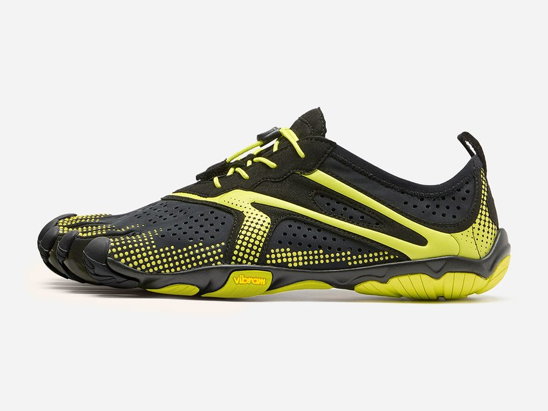
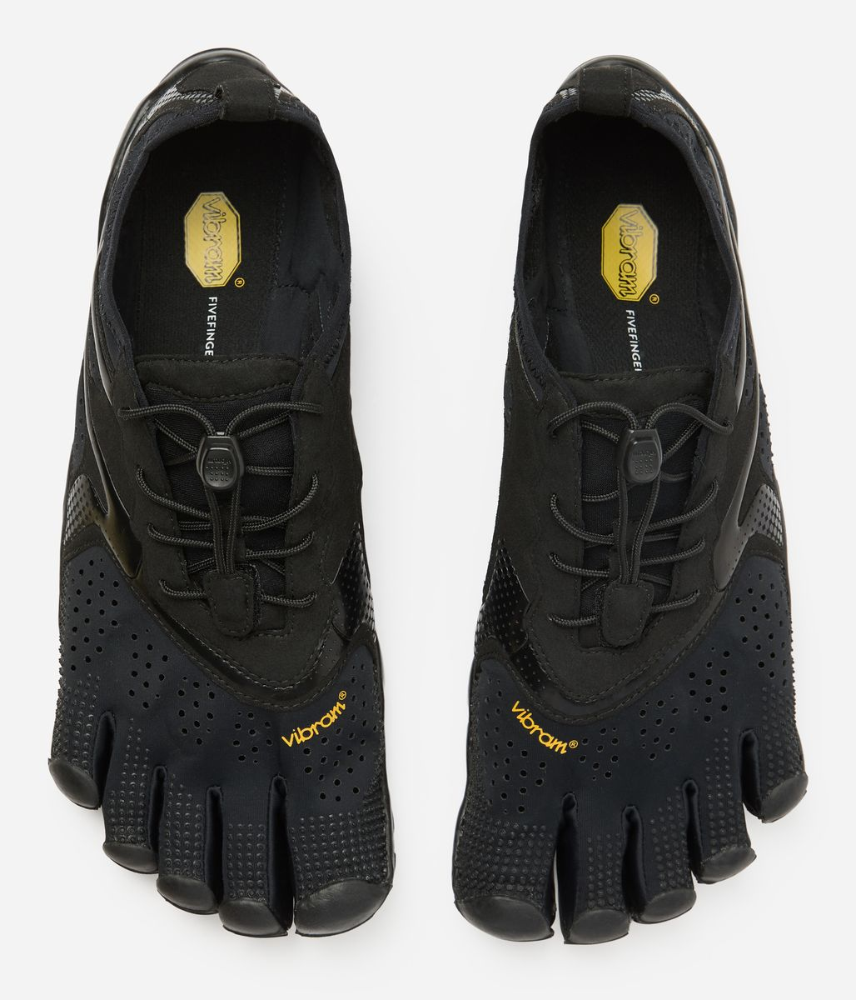
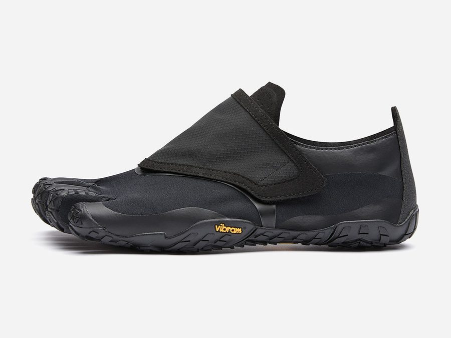
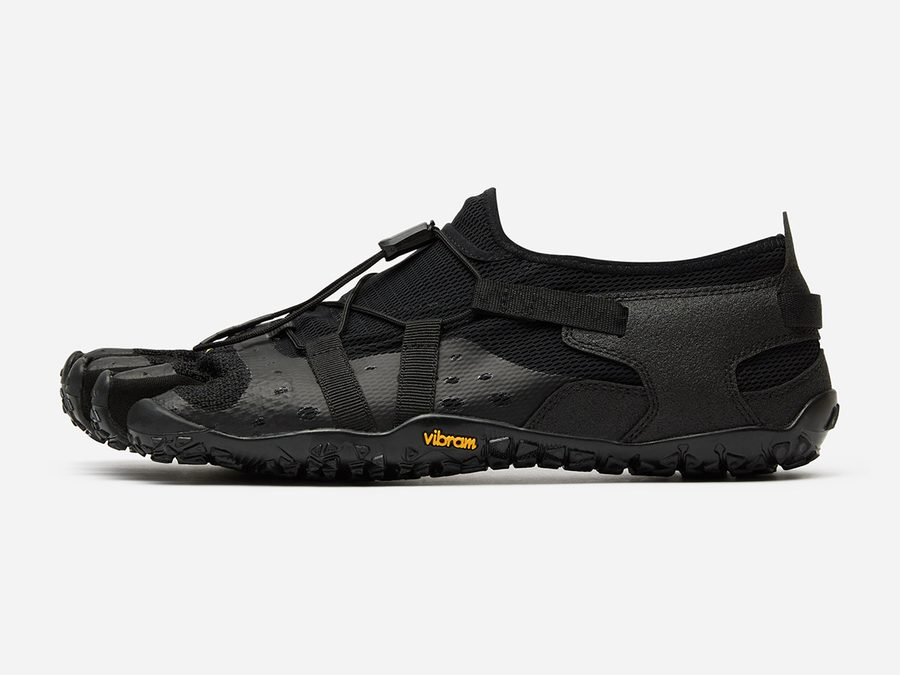
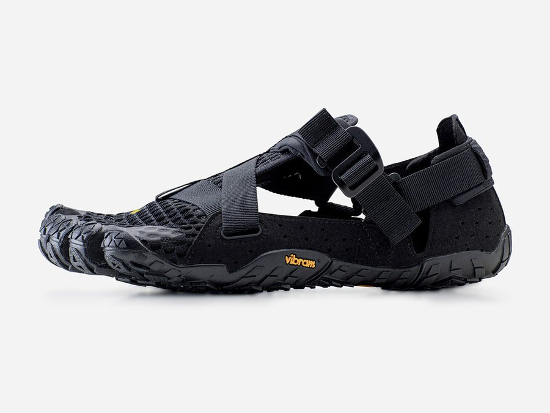
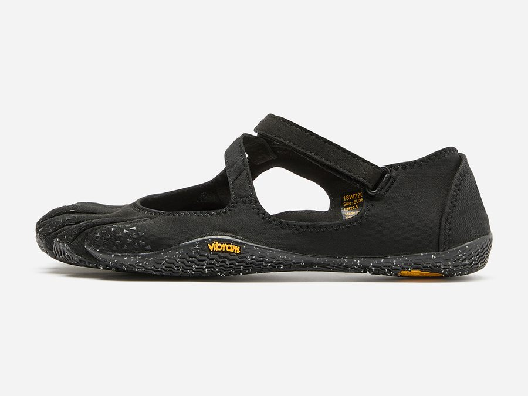
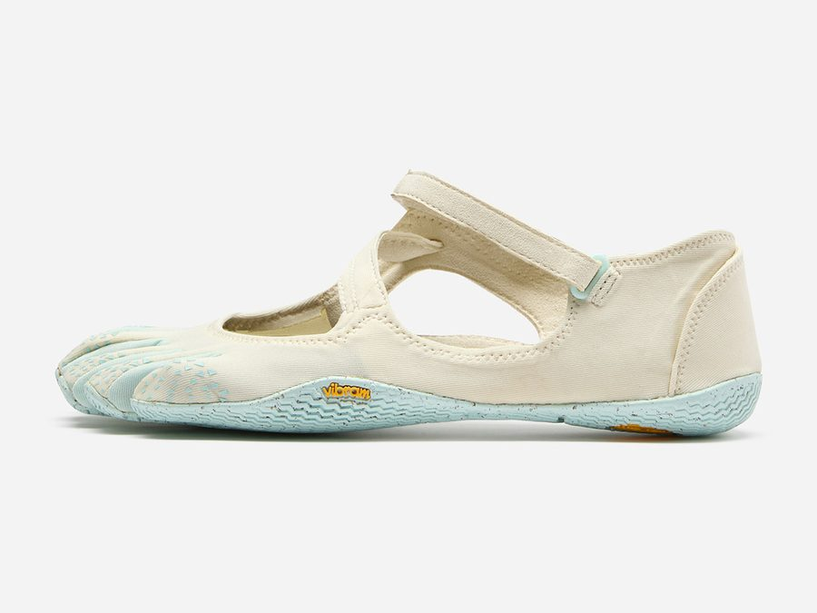
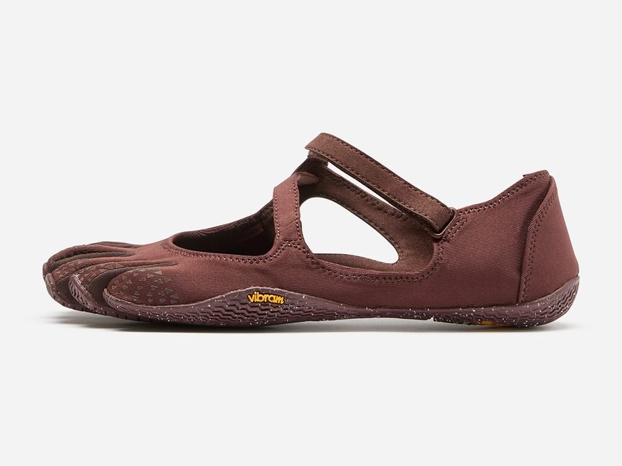
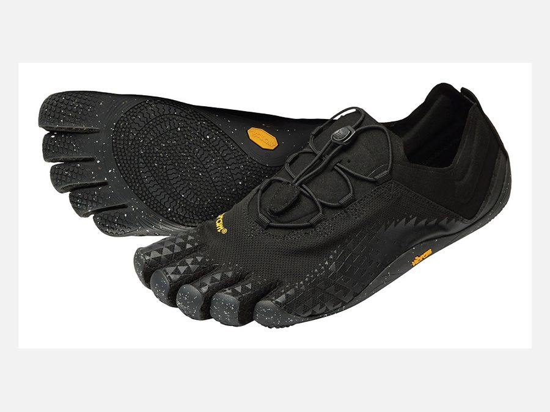
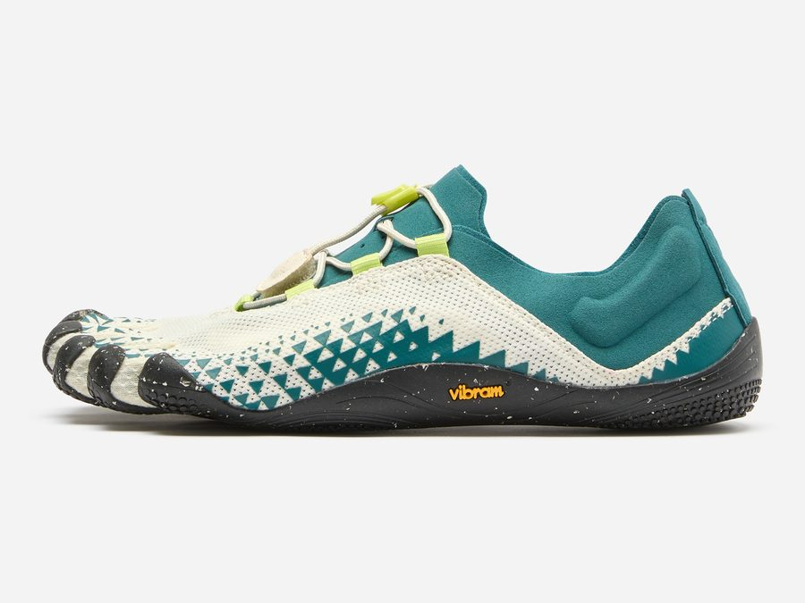

Road RunningV-Run
MBlack-Lime / Black · MWTotal Black
Lightweight road runner with a breathable upper and a grippy, flexible sole. The one to start running naturally.
RM800up to 30% off at the booth
Pop-Up Event · Ativo Plaza
Up to 30% OFFon Vibram FiveFingers shoes
Event Overview
Barefoot Malaysia brings the full Vibram FiveFingers lineup to Ativo Plaza for one weekend. Come and feel the difference of five-toe freedom, get fitted by our team and take home your pair at the best price of the year.
13 – 15 November 2026
Friday, Saturday & Sunday
12:00 PM – 8:00 PM
Walk-ins welcome, no booking needed
Ativo Plaza
Damansara Avenue, Bandar Sri Damansara
Up to 30% OFF on all Vibram FiveFingers at the booth. Discount varies by model, while stocks last.
About the Brand
Vibram FiveFingers are minimalist shoes with five individual toe pockets, a thin and flexible Vibram rubber sole, and almost nothing in between you and the ground. They are designed to let your feet move the way they were built to move.

Event Lineup
Regular Malaysian retail prices are shown. Every model below is up to 30% off at the booth during the event. Sizes and colours are subject to availability.

Road RunningMBlack-Lime / Black · MWTotal Black
Lightweight road runner with a breathable upper and a grippy, flexible sole. The one to start running naturally.
RM800up to 30% off at the booth

Trail RunningMBlack
Trail-ready protection with a quick hook-and-loop closure and a lugged Vibram outsole for mud, roots and rock.
RM820up to 30% off at the booth

Outdoor / Water SportsMWTotal Black
Fast-drying water shoe that walks, swims and hikes. Drainage ports and a quick-pull lace keep it secure and light.
RM780up to 30% off at the booth

Outdoor / Water SportsMBlack · WIvory / Green
The open-air FiveFingers sandal. Airy mesh, adjustable straps and a sole that loves beaches, rivers and hot days.
RM780up to 30% off at the booth

Yoga & PilatesWBaby Blue · Black · Brown


A barely-there Mary Jane for yoga, Pilates and studio work. Grip without socks, toes free to spread and balance.
RM650up to 30% off at the booth

TrainingMTotal Black · WIvory-Deep Lake

Built for the gym: lifting, functional training and mobility. A quick-lace system locks the foot while the sole stays flat and stable.
RM780up to 30% off at the booth
Prices are regular retail prices in Malaysian Ringgit. Event discounts are applied at the booth and vary by model. Photos show representative colourways.
Why Barefoot
Humans walked and ran barefoot for most of our history. Barefoot shoes like Vibram FiveFingers protect your feet while letting them do what feet are built to do.
Individual toe pockets let your toes spread naturally. A wider base means better balance and a more stable stride.
A thin sole sends real feedback from the surface to your feet, so your body can react and adjust with every step.
Without stiff support doing the job for them, the small muscles of the foot and lower leg get to work and build strength over time.
No raised heel. Heel and forefoot sit level, encouraging an upright posture and a lighter, more natural footstrike.
FiveFingers bend with your foot in every direction and weigh a fraction of a conventional shoe. Easy to pack, easy to wear all day.
Vibram rubber guards against sharp objects, heat and abrasion, so you get the barefoot feel with none of the barefoot risks.
Most footwear is built around cushioning and support. FiveFingers is built around the shape and function of the foot.
New to barefoot shoes? Start with short walks and build up gradually. Our team at the booth will show you how.
At the Booth
No booking, no pressure. Drop by any time between 12 PM and 8 PM and we will walk you through it.
Head to Ativo Plaza in Bandar Sri Damansara and look for the yellow Vibram FiveFingers booth. Use the map link below to navigate.
FiveFingers sizing is different from regular shoes. Our team measures your foot length and recommends the right EU size for each model.
Slide your toes into the pockets, then walk, jump and squat. Compare models for road, trail, water, yoga or training until one feels right.
Choose your model and colour and pay at the booth with the event discount applied. Stock is limited, so early visitors get the widest choice.
Leave with your new pair, care instructions and a simple plan for easing into barefoot movement over the first few weeks.
FAQ
The event offers up to 30% off across the Vibram FiveFingers range. The exact discount depends on the model and colourway, and is applied at the booth during the three event days only, while stocks last.
Yes, that is the whole point of the pop-up. All models in the lineup are available to try in men’s and women’s sizes, and our team will help you find the right fit.
FiveFingers use EU sizing based on your foot length, and the fit is more precise than regular shoes because each toe has its own pocket. We measure your feet at the booth and recommend the size for the specific model you choose. If you are between sizes, we will let you try both.
It depends on what you want to do. V-Run for road running and daily walks, Trailope for trails, Spidrwalk and Breezandal for water and hot outdoor days, V-Soul for yoga and Pilates, and Groundsplay LS for the gym. Not sure? Tell us how you plan to use them and we will narrow it down.
Take it gradually. Begin with short walks of 20 to 30 minutes and increase the time over a few weeks as your feet and calves adapt. Build up to running or longer sessions only once walking feels comfortable. Listen to your body and rest if anything feels sore.
No. FiveFingers are designed to be worn without socks. If you prefer socks, five-toe socks work with every model.
Machine wash cold on a gentle cycle with mild detergent, then air dry away from direct heat. Never put them in a tumble dryer.
No registration is needed. Walk in any time between 12 PM and 8 PM on 13, 14 or 15 November. Weekend afternoons are the busiest, so come early for the widest choice of sizes.
Event Details
13 – 15 November · 12 PM – 8 PM